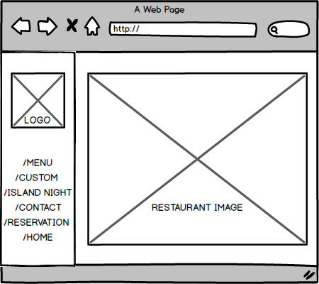
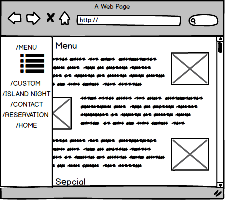
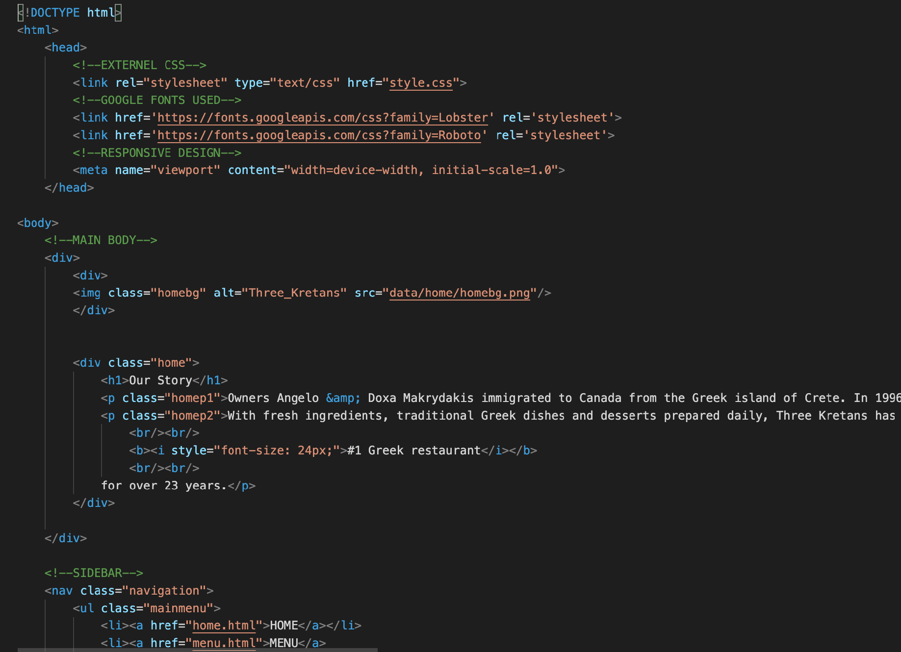
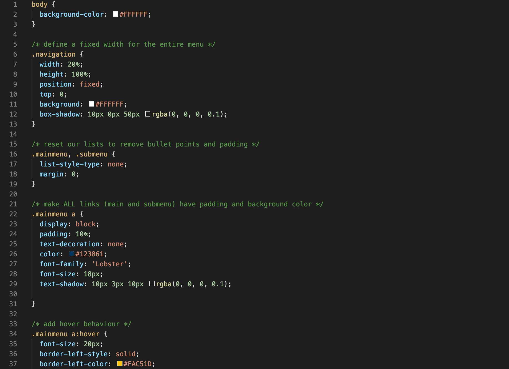
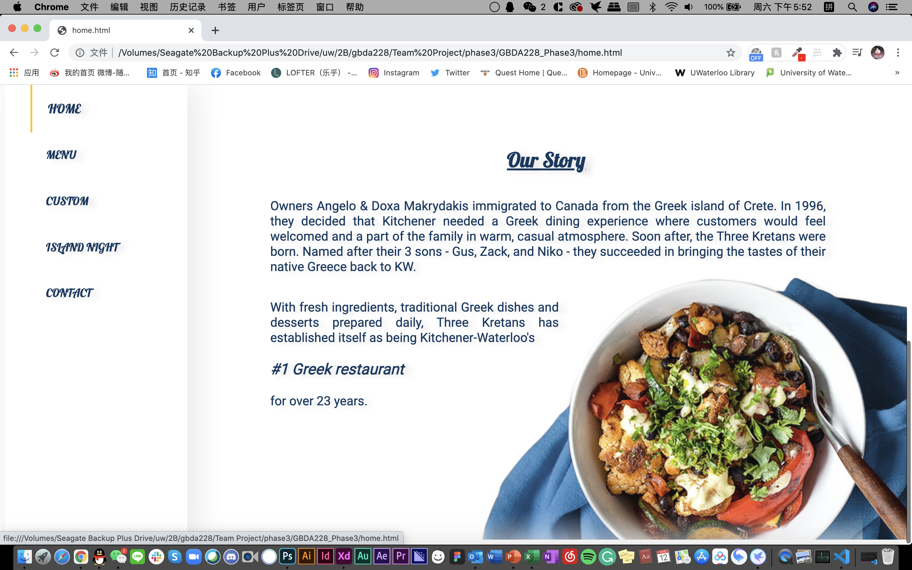
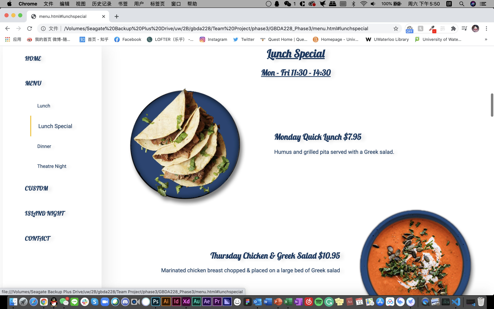
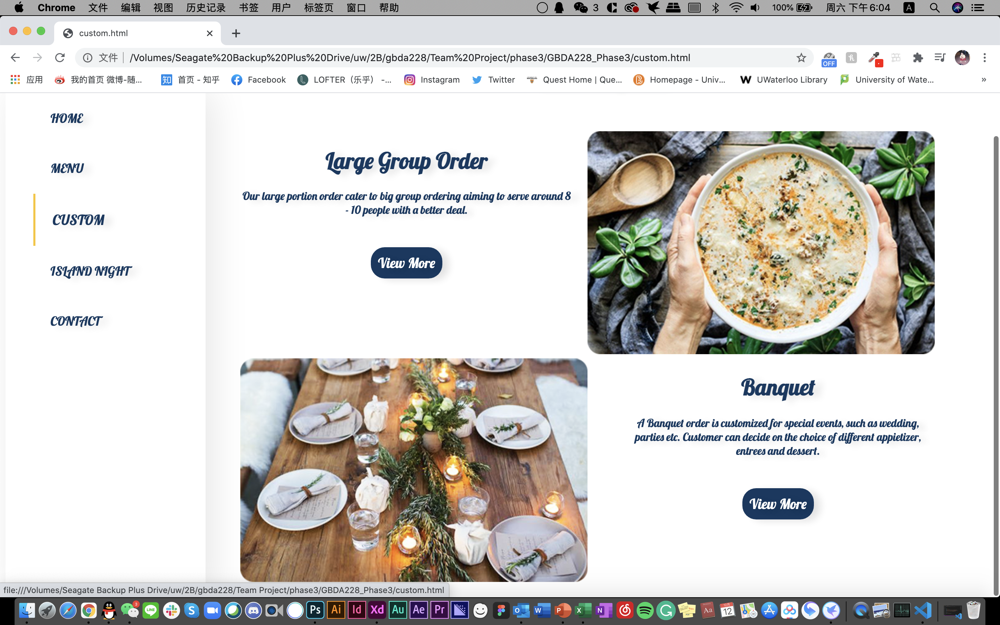
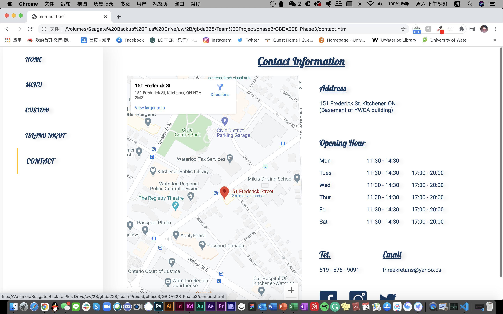

Three Kretans
Three Kretans is a Greek restaurant, a family restaurant owned by three brothers since 1996.
The ultimate goal of the business is to provide a delight, enjoyable, and relaxing dining experience
that allows customers to feel the Greek vibe.
Their old website has some critical issues, which concludes to 4 main points,
lack of funtionality, lack of focal point, lack of similarity, and lack of proximity.
Based on these deficiencies, we redesign the website.
Role Taken
Client Needs
Before redesign, we communicated in person with the owner of the restaurant to understand the customer's need.

Functionality Design
I was participated heavily in redesign regarding the functionality aspect.
Front End Coding
I was responsible for the entire front end coding including HTML, CSS and some JavaScript.
Deliverable
       